Designing a play-along companion app for a live television show
- Хамрах хүрээ
- UI ба визуал дизайн
- Үүрэг
- UI/UX дизайнер
- Захиалагч
- The Voice Mongolia
- Он
- 2025
Brainstorm and research
Шоу эфирт байх үед апп юу хийх ёстой вэ: үзэх, санал өгөх, хамт тоглох. Хязгаарлалтыг эхэлж нэрлэсэн — брэнд чанга ирдэг, интерфейс түүний дор уншигдсаар байх ёстой.
Дараа нь одоо байгаа дэлгэцүүдийг нэвтрүүлэг тэднээс юу шаарддагтай нь тулган уншсан, мөн өөрчлөх үндэслэл.
User flow
Гурван зам, өөр өөр мөчид ашиглагддаг тул тусад нь: тойрог эфирт байхад санал өгөх, дууссаны дараа үр дүнг унших, дугаар хооронд тэмцээнийг үзэх. Санал өгөх нь нүүр дэлгэцээс дөрвөн товшилт бөгөөд түүнээс хэзээ ч гардаггүй.
Low-fidelity
Санал өгөх замыг бүдүүвч нарийвчлалаар — нүүр урсгалаас баталгаажуулалт хүртэл таван дэлгэц, дээр нь тэдэнтэй ижил бүтэцтэй хоёр төлөв: Ultra Vote авсны дараах хуудас, тойрог шийдэгдсэний дараах сүлжээ.
High-fidelity
Нэвтрүүлгийн брэнд доорх эцсийн дэлгэцүүд — гүн улаан, хар, оролцогчийн гэрэл зураг бүтэн дэлгэцээр, харин санал өгөх товч л алдаж боломгүй цорын ганц зүйл хэвээр.
Voting, while the show is on air
The whole screen answers one question: who, and how many votes do I have left. The balance and the countdown sit above the grid, and the vote button is the only filled thing on the page.
Casting the vote
Tapping a contestant raises the sheet without leaving the grid — the same faces stay on screen behind it. Free votes, then Ultra Vote at ten, then the confirm. Three choices, one screen, no navigation during a window that closes.
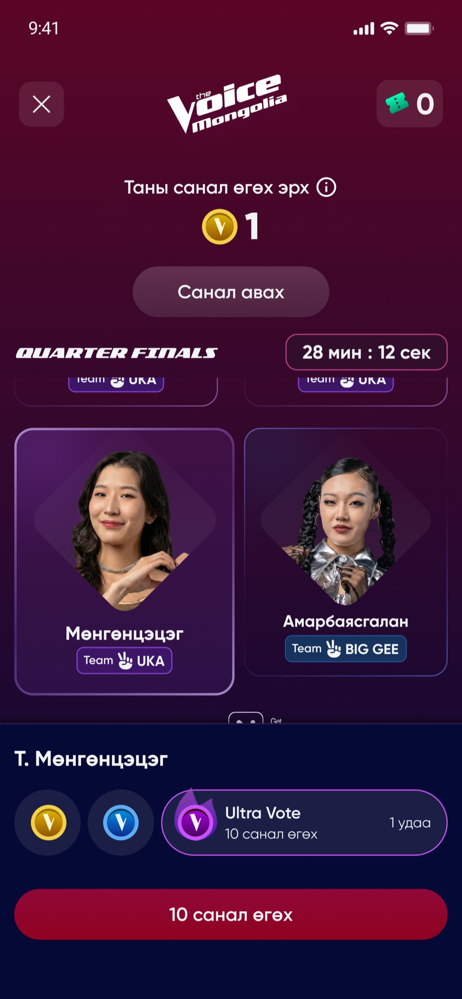
A round, drawn and decided
The battle list carries the round twice. Nothing moves between the two screens — the win marks arrive, the stolen and saved get their own badge, and whoever is out goes dim. A viewer reads the result in the place they already learned.
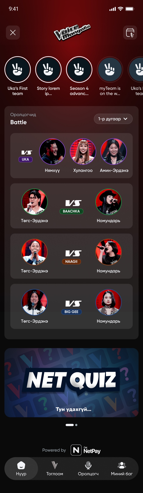
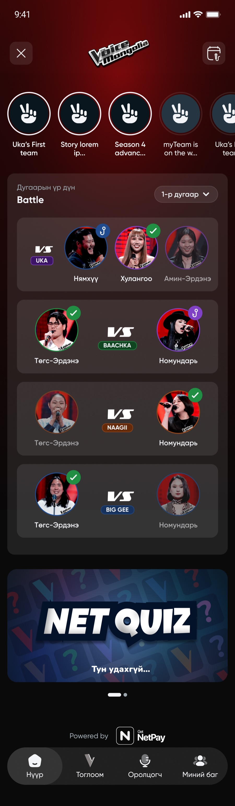
Knockouts, the same way
Twelve names in one grid, each under their coach’s colour. The result state changes nothing but the marks, so the round stays recognisable as the round.
A team filling up
The same coach page before the blinds and four auditions in: 0/16, then 4/16. The empty seats are drawn rather than hidden, so the shape of the season is visible from the first episode and every new artist lands somewhere a viewer has already seen.
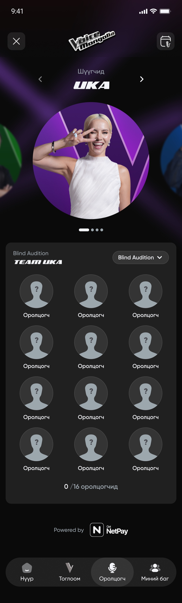
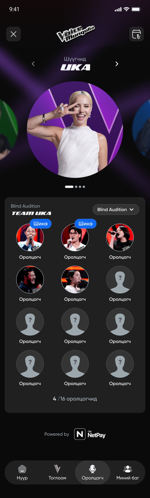
A career in one column
Every performance an artist has given: the round, the song, and whether they survived it — passed, stolen, saved. The team colour follows them from the battle row to this page. When they are out, the page still tells the whole story.
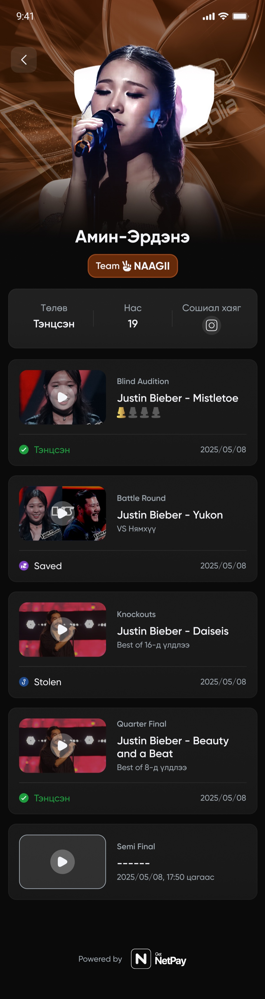
Design system
Дэлгэцүүдийг бүтээсэн компонентууд. Багийн дөрвөн өнгө нь түүний нуруу — дасгалжуулагч бүр өөрийн градиент, чип, картыг эзэмшдэг бөгөөд тэр хослол дуучныг тулааны мөрөөс хасагдалтын хавтан, өөрийнх нь профайл хүртэл дагадаг. Бусад бүхэн доор нь чимээгүй суухаар бүтээгдсэн: хоосон карт, сандлын төлөв, навигацийн дүрс, тоглолтын мөр.
14 харуулав · багийн өнгө, карт, сандал, дүрс тэмдэг, санал өгөх төлвүүд
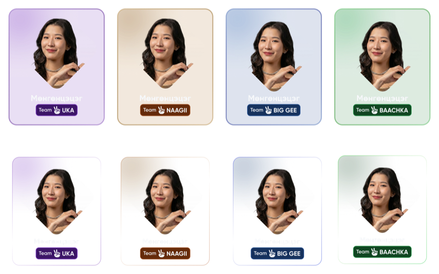
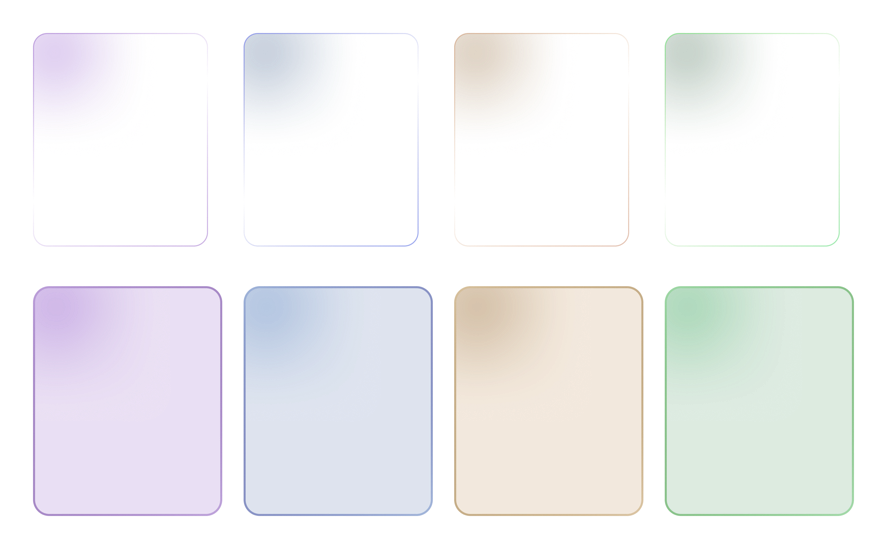
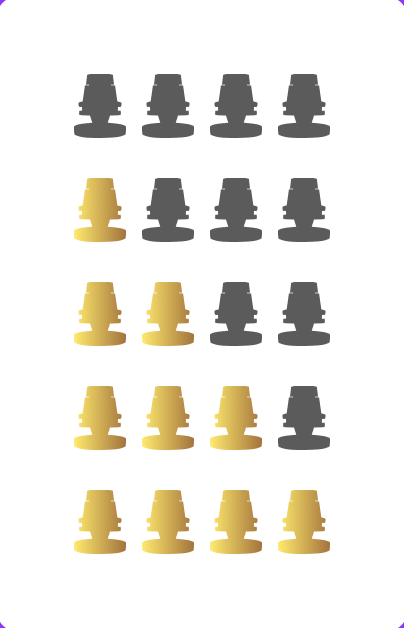
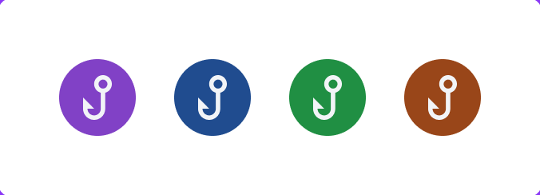
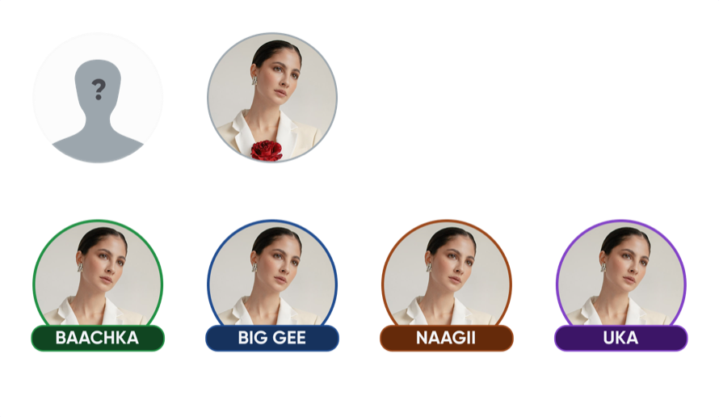
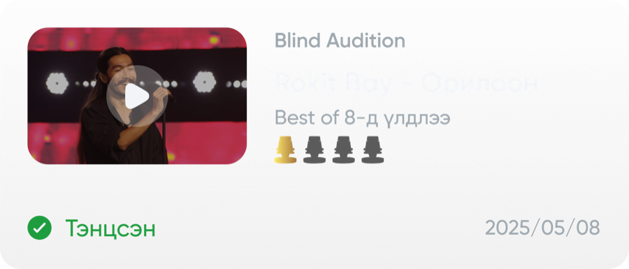
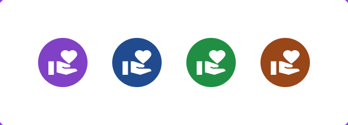
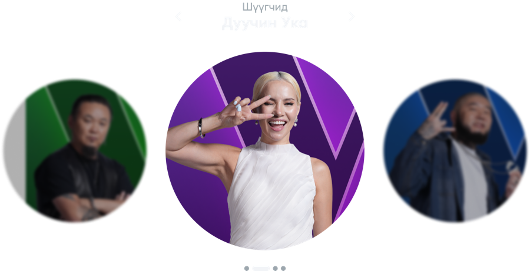
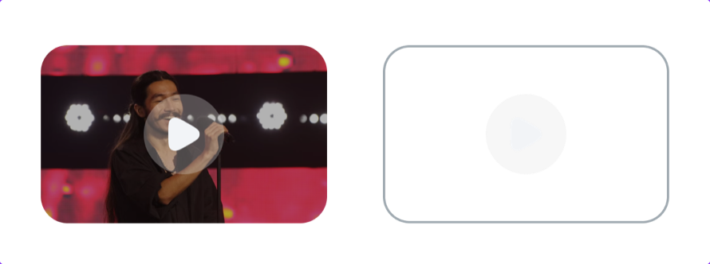
Outcome
Хүмүүс аппын дотор юу хийсэн бэ. Улирал дууссаны дараа уншсан арван гурван долоо хоногийн лог — хэдэн хүн нээсэн, хэдэн үйлдэл хийсэн, тэр үйлдэл хаана буусан.
Үзэхээс цааш орсон. Үйлдлийн талаас илүү нь оролцогчийн профайл, викторин, багаа бүрдүүлэх дээр буусан — өөрөөр хэлбэл хүмүүс нүүр хуудсыг нээгээд гараад явчихаагүй, дотогш орсон. Нээсэн хүн тутамд дунджаар 3.4 үйлдэл ногдоно.
Хэн ч холдоогүй. Викторины тусдаа лог дээр (2025‑10‑27 — 2025‑12‑21, найман долоо хоног) 955 хүн 39 177 хариулт бичсэн: долоо хоног бүр хорин таван орчим асуулт, талаас илүү нь зөв. Долоо хоног тутмын тоглогчийн тоо 145–250-ийн хооронд тогтвортой байж, уналт огт гараагүй.
Нэвтрүүлгийн хэмнэлээр хөдөлсөн. Оргил долоо хоног нь 2026‑01‑19, тухайн хэсэгт 1 315 хүн, 4 032 үйлдэл. Дөрвөн хоногийн дараа, 1-р сарын 23-нд, 5.0.7 хувилбараар санал өгөх боломж нээгдсэн — үзэгчид апп биш, шоу тэдэнд шийдэх зүйл өгсөн мөчид ирсэн.
Эх сурвалж: voice_mongolia.voice_activity_log,
13 долоо хоног, 2025‑12‑01 — 2026‑02‑23;
викторин quiz_cust_answer × quiz_week_info.